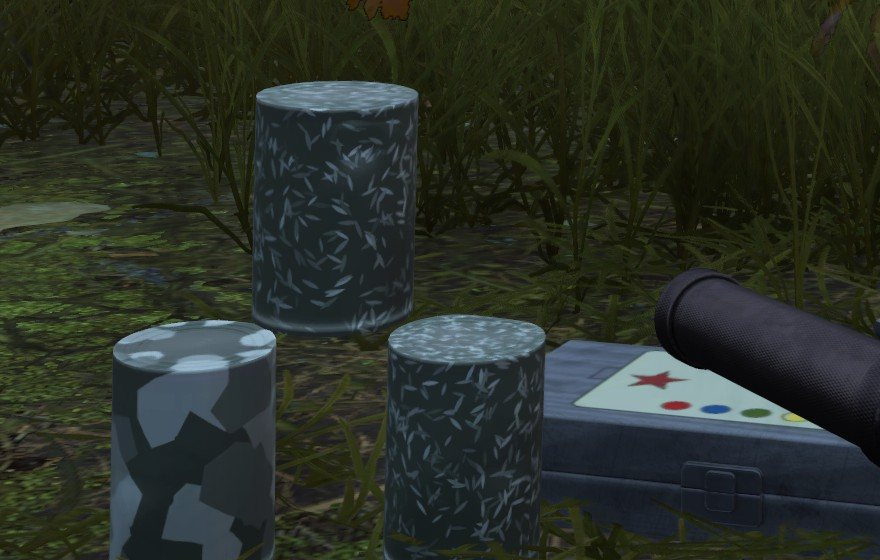
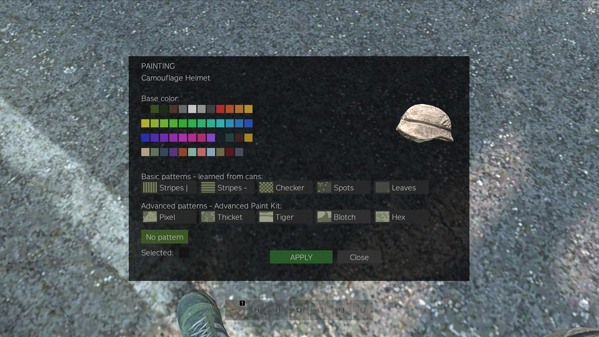
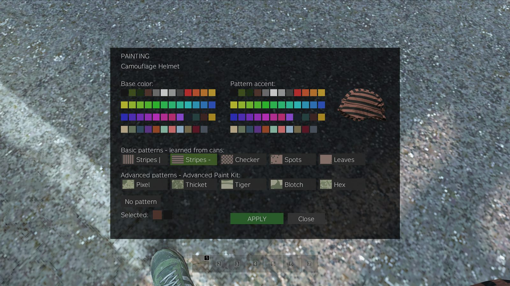
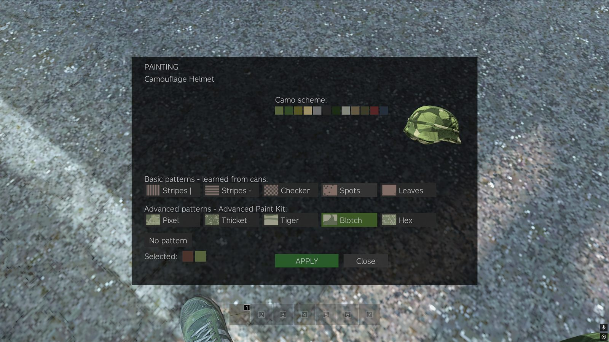
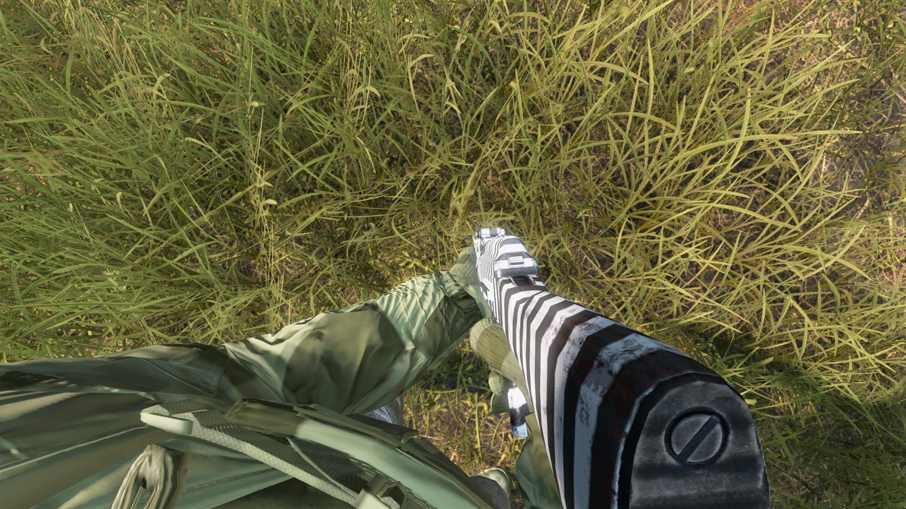

BZA PaintMod lets you repaint weapons part by part, along with almost all of the clothing and armour you wear. It changes nothing else: no stats, no durability, no accuracy. A painted rifle shoots exactly like an unpainted one.
The short version. Find a Paint Kit in loot. Drag it onto the thing you want to paint and hold the Paint action. Pick a colour, press APPLY. Everything past that is progression: patterns and camo schemes are learned from cans you find out in the world.
- Cost
- Free
- Charges per kit
- 2–4
- Stencils to find
- 4
- Camo combos
- 25
- Persistence
- Survives death
- Progression wipe
- Every 6 weeks
What a fresh character has
Worth knowing before you open the menu the first time, because the grids will look emptier than the screenshots on this site:
- Four colours — black, olive, forest green and brown. More arrive by grant rather than by loot: a promo code from Discord, and the founder colour five players will earn. Colours you do not hold are not drawn in the menu at all, so the grid you see is always the grid you can use.
- One stencil — Stripes |. The other four are found on cans.
- No camo. All five advanced patterns arrive the moment you find your first Advanced Paint Kit.
1. Find a paint kit
Paint kits are world loot. They look like a tool case with a paint-splash label. There are two tiers and the difference matters a lot.
| Kit | Where it spawns | What it paints | Charges |
|---|---|---|---|
| Basic Paint Kit grey case |
Industrial, towns, villages, farms and hunting spots. Common. | Any colour you hold, plus any stencil you have learned. | 2–4 |
| Advanced Paint Kit olive military case with a red star |
Tier 3 and Tier 4 military zones. Rare. | Everything the basic kit does, plus the five advanced camo patterns. Required for any camo. | 2–4 |
Both kits also drop at helicopter crash sites and military convoys.

Check the quantity bar before you plan a paint run. A full kit is four charges — one paint job spends 25% of it — but kits found as loot spawn part-used, anywhere from 50% to 100%. That is two to four jobs, not always four. Kits from paint caches come full.
The kit you combined with the item is the kit that gets used, and camo painting always spends an advanced kit, even if you are carrying a basic one too.
2. Paint something
-
Combine the kit with the item
Drag the paint kit onto the item, or the item onto the kit. It works on things in your inventory, on your body, lying on the ground next to you, and in nearby tents.
-
Hold the Paint action
Same as any crafting action — hold the key rather than tapping it. The painting menu opens.
-
Choose
The menu has one row of pattern buttons and rearranges the colour grids around whichever you pick. The preview on the right is the actual item, updating as you click.
-
Press APPLY
The paint is on. It is visible to every other player immediately, and it is saved — it survives restarts, dropping the item, and your own death.
No kit yet? You can still browse. Take the item into your hands and press K — or press ESC and hit PAINT PREVIEW. The same menu opens in preview mode — every colour, stencil and camo you hold, live on the item — but with no APPLY button. Painting for real still takes a kit.
The key is rebindable: Settings → Controls, look for Paint preview. K is just the default, picked because it is one of the two letters vanilla DayZ leaves unbound.
The three modes of the menu
The in-game labels are Basic patterns — learned from cans and Advanced patterns — Advanced Paint Kit. This site calls the first group stencils; they are the same five.





3. Learn the stencils
There are five stencils: Stripes |, Stripes —, Checker, Spots and Leaves. You do not start with them. Every player begins knowing Stripes | so the menu is never empty; the other four are found.
- Pattern Paint Cans spawn in industrial zones. They look like an ordinary tin can, wearing the stencil they teach in a red-and-yellow warning pair — so you can read what a can is worth before you pick it up.
- Combine the can with a knife or a can opener and hold Open can. The can is consumed and the stencil is yours for the rest of the wipe.
- Opening a can for a stencil you already know just consumes it and tells you ALREADY KNOWN. No penalty, no loss.
Preview all five stencils in any colour pair →
4. Collect the camo combinations
Advanced camo is the long game. Five patterns — Pixel, Thicket, Tiger, Blotch, Hex — each in fixed colour schemes.
- An Advanced Paint Kit gives you all five patterns immediately, but only in the UA Pixel scheme.
- Every other combination is taught by a Military Paint Can, and a can teaches exactly what is printed on it: one pattern in one scheme. Learning “Thicket in Autumn” does not give you “Tiger in Autumn”.
- Six schemes are obtainable: UA Pixel, Woodland, Autumn, Desert, Urban and Night. Five patterns × five earned schemes = 25 combinations to collect.
- Military Paint Cans spawn in Tier 3–4 military zones, at the airfield, and with a boosted rate inside contaminated gas zones. Bring an NBC suit.
5. Paint caches
Four fixed locations each roll a 35% chance every restart to hold a stash: three Military Paint Cans stacked up with an Advanced Paint Kit lying beside them.
Rify shipwreck
On and around the wreck, north-east coast.
Pavlovo bunker
The military bunker complex in the south-west.
Tisy military base
Far north-west. The hardest of the four to hold.
NWAF airfield
Runway and aprons — a wide area, worth a sweep.
Every dynamic gas zone rolls the same 35% chance when it appears. Those are still the best odds in the game for a Military Paint Can, and the reason to keep an NBC suit in the tent.
Restarts are at 02:00, 08:00, 14:00 and 20:00 Kyiv time — 01:00, 07:00, 13:00 and 19:00 CEST. Caches roll at restart, so the run is worth making early — and so is expecting company.
6. Promo codes
Colours outside the free four are granted, not looted. Right now that happens through promo codes handed out in Discord during events and giveaways.
Press ESC in game
The PROMO CODE box sits right under the Discord button.
Type the code and hit REDEEM
The colour lands in your palette instantly. No reconnect, no relog.
Codes are announced in Discord. Some are permanent, some last until the next wipe — the announcement says which.
Join the Discord to catch them →
The founder race
The first five players to complete a full advanced pattern
— all five earned schemes of any one of Pixel, Thicket, Tiger,
Blotch or Hex — keep the exclusive colour #A056F5
permanently.
Progression wipes every six weeks; the founder colour does not — once earned, it is yours forever.
The scheme that ships with the Advanced Paint Kit does not count towards the set — everybody has it. Standings are posted in Discord.
Good to know
- Paint is permanent. It survives server restarts, stays on items you drop, and stays on gear looted off a body — including yours.
- Density adapts to the item. The same pattern is packed tighter on a jacket than on a mask, so it reads at about the same size everywhere. There is no size slider any more.
- Your progression is per account and survives death. Patterns and schemes you have learned are tied to your Steam ID, not to your character. Dying costs you gear, not knowledge.
- Progression wipes with the server, every six weeks.
- Painting is server-side. The mod is public on the Workshop, but paint only applies on servers running our private server component.


Questions
Does painting give any advantage in a fight?
No, and that is deliberate. No stat, no durability and no hitbox changes. Ghillie gear and fur headdresses are excluded from painting on purpose, precisely so paint never becomes real camouflage you can buy or grind.
Do I have to buy anything?
No. Nothing on this server is for sale. Every kit, can, pattern and scheme described here is found in loot.
The Paint action does not appear on an item.
Either the item is excluded by design (pistols, shotguns, low-tier civilian guns, optics, ghillie, fur headdresses, leather moccasins), or the vanilla model has no paintable texture zone. This is a vanilla-only mod — we do not modify models to add one. The full list is here.
I lost my rifle. Do I lose the patterns I learned?
No. Learned stencils and camo combinations belong to your account for the whole wipe. Only the paint on that particular rifle is gone — along with the rifle.
Can I use the mod on another server?
You can subscribe to it and it will load, but painting will not work: the component that validates and applies paint is private to this server.
Why can I not choose the colours of a camo pattern?
Because a scheme is a curated set of three or four tones that work together, the way real camouflage is designed. Free colour choice is what the stencils are for — any colour you hold as base, any other as accent, with no colour restricted to solid use.